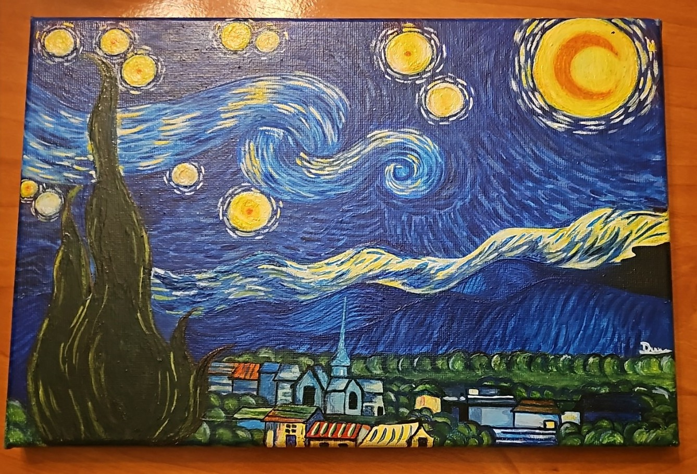
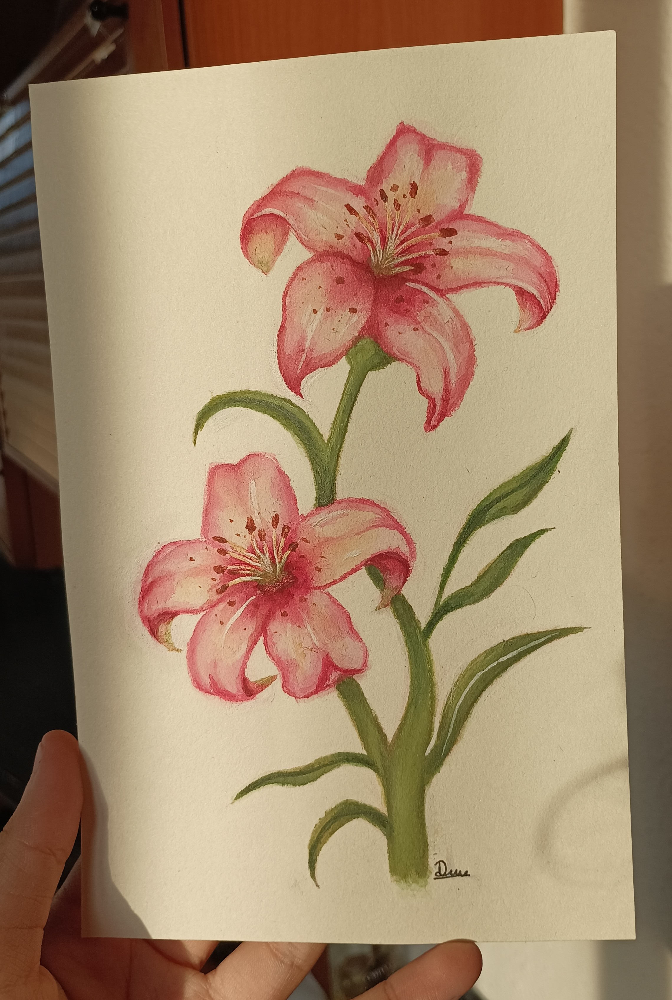

Detrás de Sumi.chh: Una historia que empezó con curiosidad
¡Hola! Soy la creadora de Sumi.chh ✨
Tengo 15 años y, si tuviera que definirme en una sola palabra, sería creativa. Me encanta dar vida a cosas nuevas, experimentar y plasmar lo que imagino a través de mis manos. Aunque hoy ves aquí una colección de accesorios únicos hechos con mucho mimo, mi viaje con el arte empezó un poco antes.

"Uno de mis lienzos favoritos. El arte fue mi primer refugio creativo."Todo empezó en una habitación y una pandemia 🎨
Cuando tenía 10 años empecé a pintar de forma autodidacta, jugando con los colores en casa. Nunca fui a clases ni a cursos; simplemente me guiaba la curiosidad.
En el año 2020, cuando el mundo se detuvo por la pandemia, encontré en los lienzos la mejor manera de no aburrirme y de empezar a soñar despierta. Creo que si no hubiera sido por ese momento de pausa, jamás habría descubierto mi pasión por el arte. Desde entonces, no he pasado un solo día sin practicar. Pintar me hace feliz y tengo un gran sueño: estudiar la carrera de Arte y convertirme en una gran artista.

"Experimentando con nuevas texturas. Cada trazo me inspira a crear un nuevo accesorio."De los lienzos a la bisutería (y las cuerdas de una guitarra) 🎸✨
Mi mente creativa nunca para quieta. Como me apasionaba diseñar cosas exclusivas para mí, a los 13 años decidí dar el salto al mundo de la bisutería. Lo que empezó como un juego y pura curiosidad por crear mis propios complementos, pronto se convirtió en algo más grande cuando la gente empezó a interesarse por ellos. ¡Así nació esta tiendita!
Cada cuelgamóvil, collar y pulsera que ves aquí lleva una parte de esa chispa. Y cuando necesito desconectar y buscar nueva inspiración... simplemente cojo mi guitarra y aprendo a tocar una nueva canción por mi cuenta.
Hecho a mano, con esencia artística 💖
En Sumi.chh no solo compras un accesorio, te llevas una pieza única hecha por una chica que cree firmemente en el poder de crear con el corazón. ¡Gracias por formar parte de mi sueño y apoyar mi arte!